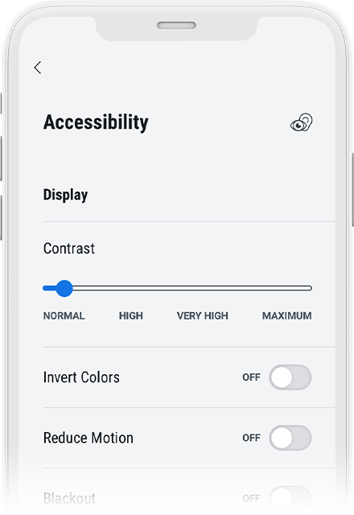
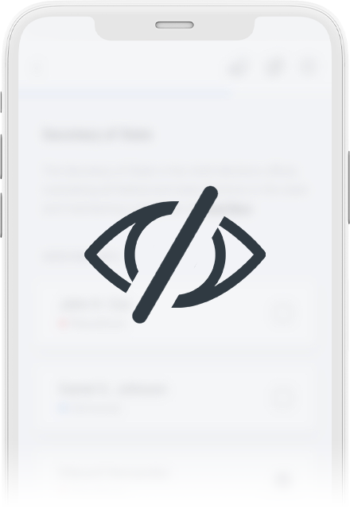

INCLUSIVE
Leading the way in accessibility
Exceeds the latest accessibility requirements with built-in features such as audio ballot, multilingual support, variable contrast rates and much more.
Uniform voting experience for all people, regardless of ability, situation, or context.
Voters can vote wherever and whenever they want without worrying about waiting on the mail.
TAMPER PROOF
Votes are safe and secure
Immutable data storage for all election content including ballots, voter lists, authentication requests and responses, returned votes, spoiled ballots.
Industry-vetted and accepted encryption technology for protecting sensitive data.
Follows mobile security best practices for securing devices and applications.
Custom made air gap device that handles security-sensitive processes.

Private
Protects the right to a secret ballot
Auditable
Transparent and verifiable
All data is available publicly during pre-election, live election, and post election activities.
System is maintained during election cycle by groups of mutually distrustful parties forcing all parts of the system to perform honestly and accurately.